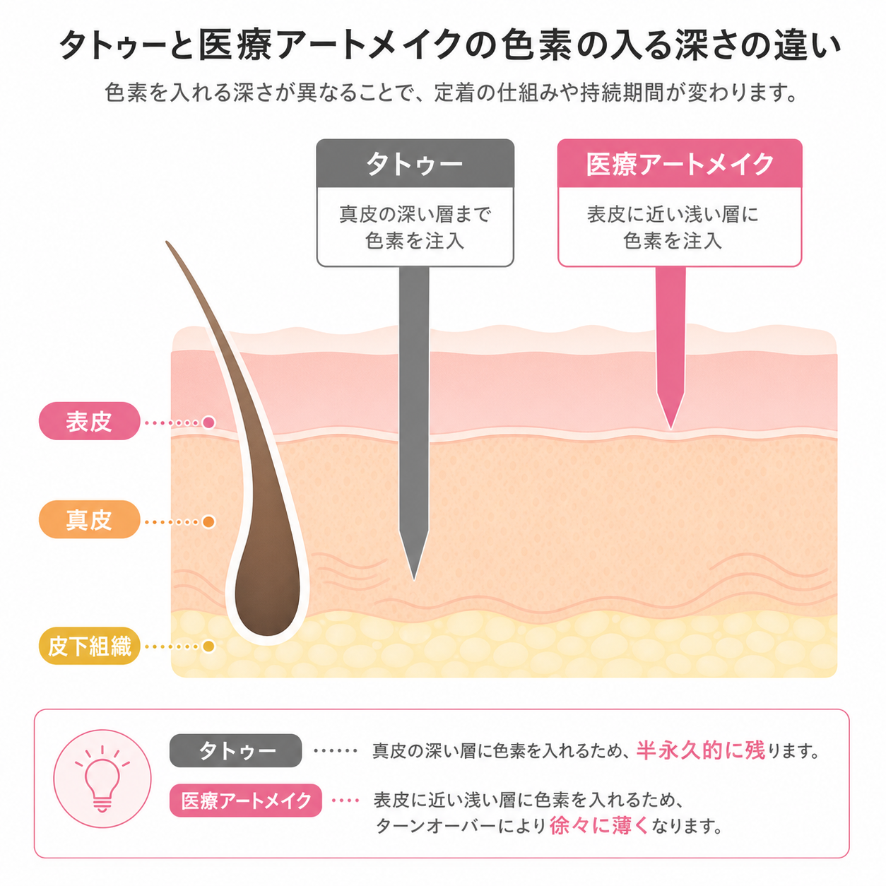

お金をかけた先に、きちんと
目に見える結果を。
手打ち式頭皮アートメイク（SMP）は、2000年代初頭にイギリスで生まれ、美容大国・韓国で独自に発展してきた技術。その本場の技術を直接習得しました。
一人ひとりの頭皮状態や髪の生え方に合わせ、手作業で1点ずつ毛根を再現。色素注入の深さや毛根配列をお客様に合わせて調整いたします。
頭皮に専用の機械を用いて微細な色素を頭皮の浅い層に施し、毛根を再現することで毛髪の密度を補う施術です。
気になる地肌の透けや傷跡を、自然な毛根の点でカモフラージュしていきます。

頭皮アートメイクは、毛根に近い自然な再現を可能にします。刺青やタトゥーとは異なり表皮に着色するため、時間とともに薄くなり、デザイン変更も可能です。
持続期間は約2〜3年。肌質・体質・性別・ライフスタイルにより個人差があります。定期的なメンテナンスで色素の褪色をカモフラージュしていきます。
私自身もエビデンスが定かではない美容医療に多額の費用をかけてきました。その経験から行き着いたのが「お金をかけた先に、きちんと結果が見える」ことでした。
薄毛に悩み、本来の実力を発揮できない方の手助けになりたい——そう考え、毎日施術をさせていただいております。
機械的な施術ではなく、専門アーティストとして手作業で1つずつ毛根を描くことで、お客様に合わせた頭皮アートメイクをご提供します。
電動機械は短時間で行えますが、毛根配列や深さの調整が難しい特徴があります。時間はかかりますが、長く色素が持ち、カスタマイズされた毛根配列を可能にする手作業の技法を推奨しています。
| 施術部位 | 1回 | 2回セット |
|---|---|---|
| M字（部分） | ¥33,000 | ¥60,000 |
| 生え際（手のひら1枚分） | ¥55,000 | ¥100,000 |
| 頭頂部（手のひら1枚分） | ¥55,000 | ¥100,000 |
| 頭頂部（手のひら2枚分） | ¥110,000 | ¥200,000 |
| 全体（生え際・頭頂部） | ¥150,000 | ¥250,000 |
| 傷跡修正 | 要相談 | 要相談 |
※お値段は範囲によって前後いたします。各部位2回以上の施術が必要です。モニター施術をご希望の方はお声がけください。
施術の適応可否やお見積もりは、公式LINEから無料でご相談いただけます。
症例やお客様の声もご案内しております。
公式LINEで無料相談する公式LINE上でご予約いただき、折り返しのメッセージにて日時を確定。施術適応の可否や詳細なお見積もりをご提示します。
ご指名の頭皮アートメイク施術である旨を受付にお伝えください。初診の方は問診票のご記入をお願いしております。
カウンセリング内容を基に医師が診察。内服の有無や持病、皮膚状態を確認します。
施術範囲にマーキングを行い、再度部位と範囲を確認。話し合いながら丁寧に進めます。
施術時間は約2〜3時間。長時間となりますので、体勢変更やお手洗いなどいつでもお伝えください。
施術後の注意事項を改めてご説明。施術の間隔は約1ヶ月を目安にお願いしております。
2院ございます。